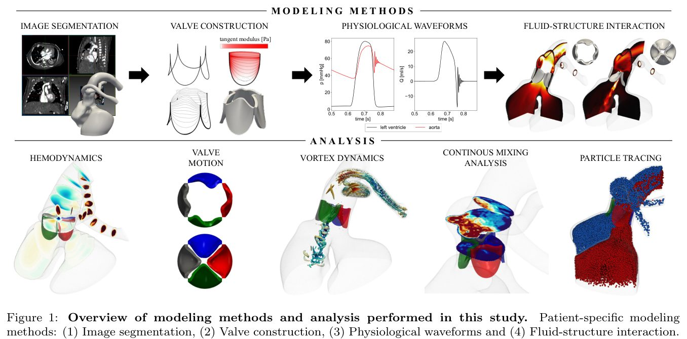
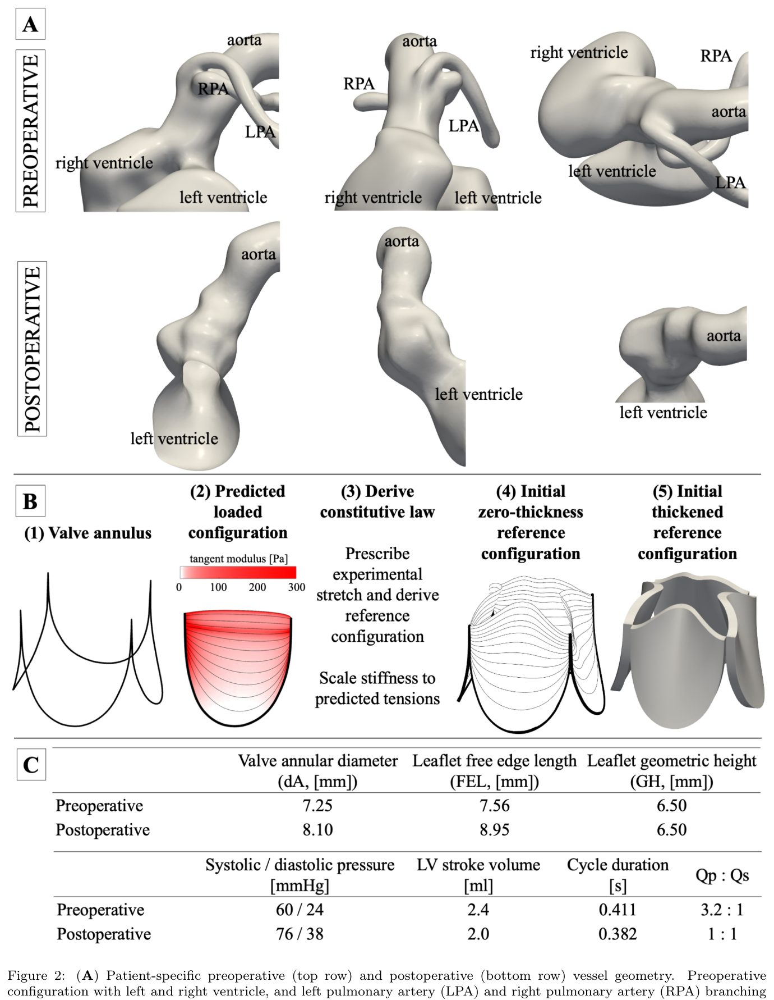
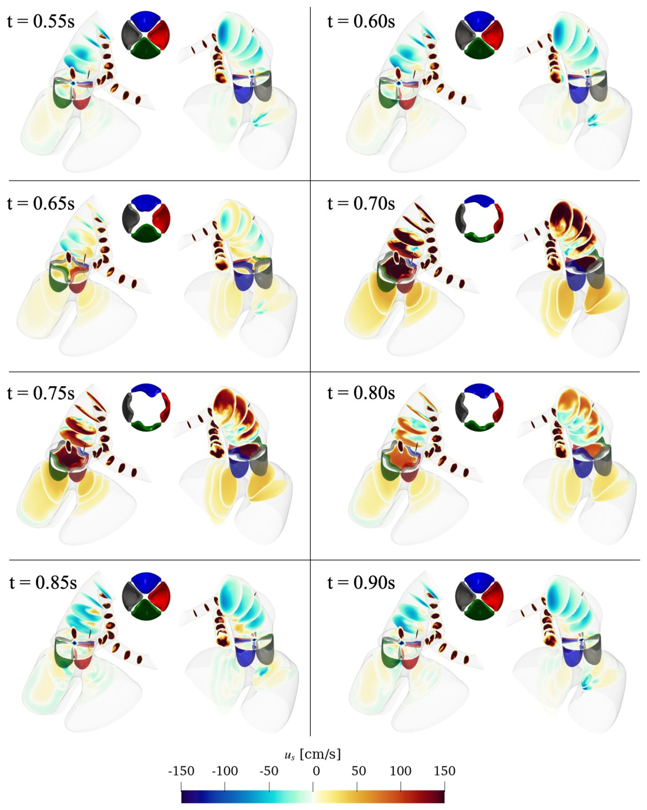
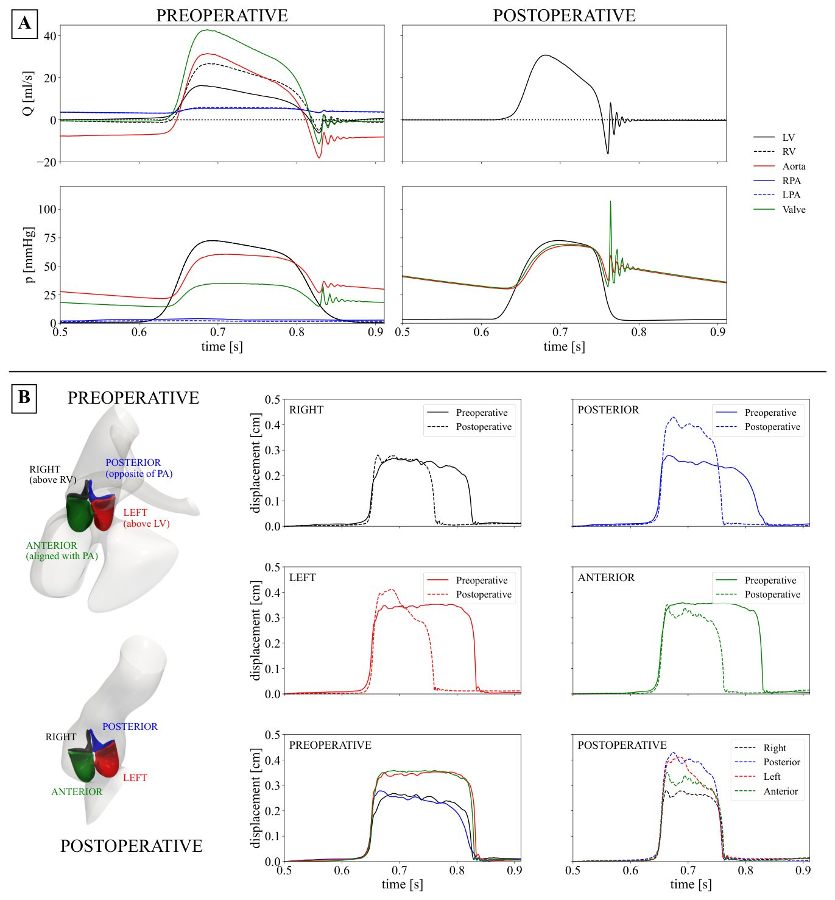
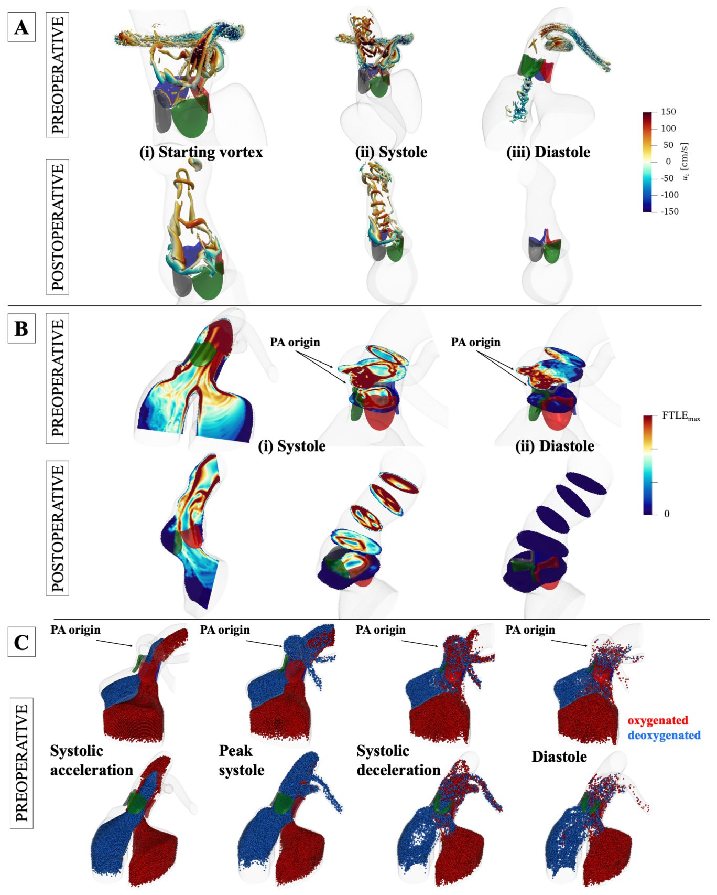

Жүректегі ортақ артериялық дің: қан ағымы қалай жүреді?


Ортақ артериялық дің — бұл жүректің туа біткен ауыр ақауы, онда негізгі қан тамырлары туылғанға дейін бөлінбей қалады. Салдарынан оттегіге бай және кедей қан араласып, клапандарға түсетін жүктеме артады. Стэнфорд университетінің зерттеушілері науқастың жеке қан ағымының моделін жасап, отаға дейін және одан кейін қанның қалай қозғалатынын бақылады. Бұл жұмыс күрделі анатомиялық ақаулар кезінде жүрек қызметін қалпына келтіру механизмдерін түсінуге көмектеседі.
Басты ойлар
- Ортақ артериялық дің гидродинамикасын зерттейтін алғашқы жұмыс.
- Клапанның дұрыс жабылмауы өкпе артерияларындағы құйындарға байланысты.
- Ақауы бар жүректе де қан ағымының қолайлы бөлінуі расталды.
Толығырақ
Зерттеушілер қан мен төрт жармалы клапанның өзара әрекеттесуін модельдеу үшін «Immersed Boundary Method» әдісін қолданды. Тамырлар мен клапанның геометриясы науқастың компьютерлік томографиясы мен эхокардиография деректері негізінде құрылды. Клапан жармаларының серпімділік параметрлері науқастың нақты анатомиялық өлшемдеріне сәйкестендірілді.
Ағымдарды талдау Лагранж когерентті құрылымдары (LCS) және бөлшектерді қадағалау (LPT) арқылы жүргізілді. Отаға дейін клапан жармаларының асимметриялық қозғалысы мен қанның кері ағуы (регургитация) өкпе артерияларындағы төмен қысым мен құйындардың әсерінен болғаны анықталды. Модель қанның араласуына қарамастан, «қолайлы ағымдық бөліну» бар екенін көрсетті: сол қарыншадан қан негізінен аортаға, ал оң қарыншадан өкпе артерияларына бағытталады. Отадан кейін жүрек гидродинамикасы қалыпты жағдайға оралды.
Шектеулер
Зерттеу тек бір науқастың деректері негізінде жүргізілген, бұл нәтижелерді барлық жағдайға жалпылауға мүмкіндік бермейді.
Мақаланың толық талдауы
Түйіндеме
Жалпы артериялық дің (ЖАД) — бұл жүректен шығатын екі негізгі артерияның іштей даму кезінде бөлінбей қалуынан туындайтын сирек кездесетін және ауыр туа біткен жүрек ақауы. Нәтижесінде бір дің мен бір клапан қалыптасып, олар арқылы аралас қан ағады. Науқастардың шамамен 25%-ында төрт жармалы клапан кездеседі, бұл көбінесе регургитацияға бейім және қайта ота жасауды қажет етеді. Клапан мен қан ағымының өзара әрекеттесуінің маңыздылығына қарамастан, ЖАД кезіндегі гидродинамика толық зерттелмеген.
Маңызды
ЖАД магистральдық қан тамырлардың бөлінбеуімен сипатталады, ал науқастардың 25%-ында клапан дисфункциясына бейім төрт жармалы клапан болады.
ЖАД-қа ота жасалғанға дейінгі және кейінгі компьютерлік томография деректері негізінде сұйықтық пен құрылымның өзара әрекеттесуін модельдеу жүргізілді. Төрт жармалы клапанның геометриясы икемділік негізінде құрылды, ал еркін жиек ұзындығы мен биіктігі эхокардиография деректерінен алынды. Қан мен клапанның өзара әрекеттесуі «Immersed Boundary Method» (батырылған шекаралар әдісі) арқылы модельденді. Шекаралық шарттар әр науқастың жеке деректеріне сәйкес бапталды. Қанның араласуын және ағыс бағыттарын зерттеу үшін Лагранж когерентті құрылымдары (LCS) және Лагранж бөлшектерін қадағалау (LPT) әдістері қолданылды.
Түсіндірме
«Immersed Boundary Method» — сұйықтық ағынындағы икемді денелердің (мысалы, клапан жармаларының) қозғалысын есептеуге арналған математикалық тәсіл.
Төмен қысым мен өкпе артерияларының (ӨА) бір жақты орналасуы жүрек циклі бойы жармалардың қозғалысына әсер етіп, асимметриялық жабылуға және регургитацияға әкелетіні анықталды. Аортадағы голодиастолалық кері ағыс ӨА-ға қан жеткізуді және регургитациялық ағынды қамтамасыз етеді. LCS және LPT талдаулары оксигенделген қанның сол жақ қарыншадан аортаға, ал деоксигенделген қанның оң жақ қарыншадан ӨА-ға бағытталғанын көрсетті. Отадан кейін қалыпты гемодинамика қалпына келді.
Бұл ЖАД гидродинамикасын зерттеу бойынша алғашқы жұмыс. Жеке модельдерде ағынды талдаудың сапалық және сандық әдістерін қолдана отырып, ӨА-ның бір жақты шығуынан туындаған гемодинамикалық бұзылыстар анықталды және отадан кейін қалыпты гемодинамиканың қалпына келуі көрсетілді. Зерттеу қан ағымының қолайлы таралуы (streaming) аралас қан ағымы бар ақауларда маңызды механизм екенін растады.
Абайлаңыз
Зерттеу жеке науқастардың модельдеріне негізделген, сондықтан нәтижелерді анатомиялық ерекшеліктерді ескере отырып бағалау қажет.
Кіріспе
Truncus arteriosus (TA) туралы жалпы мәлімет
Truncus arteriosus (TA) — бұл жүректің екі негізгі артериясы эмбрионалды даму кезінде бөлінбей қалуынан туындайтын сирек кездесетін және ауыр туа біткен жүрек ақауы. Нәтижесінде бірыңғай артериялық дің мен бір клапан түзіледі, ол арқылы веноздық және артериялық қан қоспасы өтеді. Қарыншааралық перде ақауы (ҚАП) екі қарыншадан да қанның осы клапанға келуін қамтамасыз етеді, ал өкпе артериялары тікелей аортадан шығады. Өкпе артерияларындағы қан ағымы көбінесе аортадағы ағымнан үш есе жоғары болып, бұл өкпе гиперциркуляциясына әкеледі.
Маңызды
TA ортақ артериялық дің мен өкпе гиперциркуляциясымен сипатталады, бұл өмірдің алғашқы апталарында хирургиялық түзетуді талап етеді.
Хирургия және клапан морфологиясы
TA-ны хирургиялық түзету ҚАП-ты жабуды, өкпе артерияларын аортадан бөлуді және оң қарынша үшін клапанды кондуит орнатуды қамтиды. Операцияның сәттілігі транкустық клапанның функциясына тікелей байланысты. Көбінесе клапан жармалары қалыңдаған және диспластикалық болады. Көп жағдайда клапан үш жармалы болғанымен, 25% науқастарда төрт жармалы морфология кездеседі (7 фенотипке бөлінеді). Мұндай науқастардың үштен бірінен астамы клапан сақинасының кеңеюі салдарынан туындайтын регургитация себебінен қайта операцияға мұқтаж болады, бұл ретте трикуспидализация ең төзімді әдіс болып саналады.
Қолданыстағы зерттеулерге шолу
Эхокардиография қолданылғанымен, TA-дағы гемодинамиканы инженерлік тұрғыдан зерттеу әлі де жеткіліксіз. Бұрын шошқа жүрегінің модельдерінде жүргізілген зерттеулер төрт жармалы клапандардың үш жармалыларға қарағанда асинхронды жабылуын және баяу кинематикасын көрсеткен. Сонымен қатар, қалыпты аорта клапандарының гидродинамикасы, оның ішінде ашылу кезіндегі құйын түзілуі және жабылу механизмдері егжей-тегжейлі зерттелген.
Түсіндірме
Регургитация — клапан толық жабылмаған кезде қанның кері ағуы, бұл жүрекке қосымша жүктеме түсіреді.
Зерттеу мақсаты мен әдістері
TA-ның күрделі анатомиясы қан ағымын талдауды қиындатады. Қанның «артықшылықты ағымы» (streaming) теориясы бар болғанымен, TA үшін бұл әлі дәлелденбеген. Бұл жұмыс TA гидродинамикасын зерттеу бойынша алғашқы еңбек болып табылады. Авторлар пациентке тән модельдерде сапалық және сандық талдау әдістерін қолданып, хирургиялық түзетуге дейінгі және кейінгі гемодинамиканы бағалады.
Абайлаңыз
Зерттеу пациентке тән модельдерге негізделген, сондықтан нәтижелерді барлық TA науқастарына толықтай қолдануда сақтық таныту қажет.
Трункус артериозусын түзеткеннен кейінгі гемодинамика және клапан функциясы
Бұған дейін біз клапан жармаларына тікелей араласусыз жалпы артериялық діңді (трункус) түзетуге дейінгі және одан кейінгі гемодинамикалық факторлардың клапан жұмысына әсерін бағалаған болатынбыз. Біздің есептеу модельдеріміз операция барысында өзгеретін фенотиптерді қайта жаңғыртуға және операциядан кейінгі клапан жұмысын жақсарту механизмдерін анықтауға қабілетті екенін көрсетті. Бұл біздің тәсіліміздің клиникалық маңыздылығы мен қолданылу мүмкіндігін растады.
Маңызды
Әзірленген есептеу модельдері операциядан кейінгі гемодинамикалық өзгерістерді сәтті көрсетеді, бұл хирургиялық араласудың тиімділігін бағалауға мүмкіндік береді.
Ағымдағы зерттеуде біз трункус артериозус (ТА) кезіндегі гидродинамиканы және оның оттегімен қаныққан және қанықпаған қанның араласу процестерімен байланысын түсіну үшін классикалық ағын талдауы құралдарын қолдандық (1-сурет). Қан ағымы, клапан анатомиясы және қан тамырлары арасындағы жеке сұйықтық-құрылымдық өзара әрекеттесуді (fluid-structure interaction) модельдеу арқылы біз операцияға дейінгі жағдайда қалыптан тыс гидродинамиканың бар екенін көрсеттік. Сондай-ақ, хирургиялық түзету ағын параметрлерін сау жүрек көрсеткіштеріне жақын деңгейге дейін қалпына келтіретіні көрсетілді.
Түсіндірме
Сұйықтық-құрылымдық өзара әрекеттесу (FSI) — бұл қан ағымы мен қан тамырлары немесе клапандардың деформацияланатын қабырғалары арасындағы өзара әсерді ескеретін компьютерлік модельдеу әдісі, ол жүрек-қан тамырлары ауруларын талдау үшін өте маңызды.
Нәтижелер
Гемодинамика, толқын пішіндері және жармалар кинематикасы
Операцияға дейінгі жағдайда пациенттің анатомиясы ортақ артериялық бағанадан (ОАБ) сол жақтан шығатын өкпе артерияларының (ӨА) тармақтарымен сипатталды. ӨА шығу орындарына проксимальды орналасқан клапан жармаларына сол және алдыңғы жармалар жатты, ал оң және артқы жармалар қарама-қарсы жақта болды. ӨА-ның асимметриялық орналасуы және өкпе қан айналымындағы төмен қысым қалыптан тыс гемодинамикаға әкелді: ӨА «төмен қысым резервуары» қызметін атқарды, бұл клапаннан кейін қысымның төмендеуіне себеп болды. Клапандағы регургитация және ӨА-дағы тура қан ағымы аортадан келетін голодиастолалық ағыммен қамтамасыз етілді. Хирургиялық түзету гемодинамиканы қалыпқа келтіріп, аорталық ағымды қалпына келтірді және регургитацияны айтарлықтай азайтты (3-сурет).
Маңызды
ОАБ-ны хирургиялық жолмен түзету клапаннан кейінгі қалыптан тыс төмен қысымды және голодиастолалық регургитацияны жойып, ағым профильдерін қалыпқа келтірді.
Операцияға дейін бағанада сыртқы қисықтыққа бағытталған асимметриялық ағым және систола кезінде ішкі қисықтық бойымен ретроградтық ағым байқалды. ӨА-дағы ағым жылдамдығы аортадағыдан айтарлықтай жоғары болды. Клапан жабылған кезде, бағанадағы ағым баяулап, бағытын өзгертті, ал ӨА-да тура ағым сақталды. Диастола кезінде аортадан клапан арқылы оң қарыншаға (ОҚ) ретроградтық ағым байқалды. Операциядан кейін (4-сурет) диастоладағы ағым қозғалысы айтарлықтай азайды және голодиастолалық кері ағым жойылды.
Қысым мен ағым қисықтарын талдау (5A-сурет) операцияға дейін ОҚ-ның соққы көлеміне қосқан үлесі сол қарыншадан (СҚ) 25%-ға жоғары болғанын, систола кезіндегі ең жоғары жылдамдықтар 16,25 мл/с (СҚ) және 26,67 мл/с (ОҚ) болғанын көрсетті. Регургитацияны есептемегендегі жалпы соққы көлемі 4,87 мл, клапаннан кейінгі ең жоғары ағым 42,76 мл/с болды. Клапан аймағындағы операцияға дейінгі Рейнольдс саны 1721-ді құрады, операциядан кейін ол 618-ге дейін төмендеді, систола кезіндегі ең жоғары ағым 31,14 мл/с-қа тең болды.
Түсіндірме
Рейнольдс саны — ағымның инерция және тұтқырлық күштерінің қатынасын сипаттайтын өлшемсіз шама; жоғары мәндер турбуленттілікті, төмен мәндер ламинарлық (тәртіпті) ағымды білдіреді.
Жүйелік және өкпе қан айналымы арасындағы қысым айырмашылығы 3,2:1 қатынасындағы ағымды тудырды. Операцияға дейін бағанадағы қысым қалыптан тыс төмен болып, аорталық және өкпелік қысымдар аралығында болды. ӨА-ның асимметриясы жармалардың біркелкі емес жабылуына әкелді (5B-сурет). Систола кезіндегі максималды ығысу: сол — 3,6 мм, алдыңғы — 3,7 мм, артқы — 3,0 мм, оң — 2,7 мм. Коаптация биіктігі (жармалардың түйісу аймағы) геометриялық биіктіктің 20,0%-ын құрады. Түзетуден кейін жабылу симметриялырақ болды (оң — 3,3 мм, артқы — 4,3 мм, сол — 4,3 мм, алдыңғы — 3,6 мм), ал коаптация биіктігі 30,8%-ға дейін артты.
Құйындардың дамуы мен ыдырауы
Систолалық үдеу кезінде қақпақша ашылып, бастапқы құйын қалыптасады. Оның пішіні жапырақшалар геометриясы мен гемодинамикаға байланысты. Төрт жапырақшалы қақпақта төрт бөлікті құйын байқалады, алайда қан тамырларының анатомиясы оған қатты әсер етеді. Операцияға дейінгі жағдайда өкпе артерияларындағы (ӨА) бойлық құйындар бүкіл жүрек циклі бойы сақталып, қақпақша ашылғанда бастапқы құйынмен қосылып кеткен (6A-сурет).
Маңызды
Операцияға дейінгі жағдайда құйындар тұрақсыз және тез ыдырайды, ал диастола кезінде оң қарыншаға регургитация байқалады.
Операцияға дейін құйын онша когерентті болмай, тез бұзылған. Систолада магистральдың ішкі қисығы бойында ұсақ құйындар, ал диастолада оң қарыншаға бағытталған регургитация ағыны байқалған. Операциядан кейін (ӨА алынған соң), құйынның үш жағы қақпақша тесігіне параллель қалып, төртіншісі аорта қисығы бойымен созылған «шаш қыстырғыш» пішінді құйынды түзеді. Диастолада аортада когерентті құрылымдар анықталмады, бұл турбуленттіліктің толық басылғанын білдіреді.
Лагранж когерентті құрылымдары
Операцияға дейінгі жағдайдағы Лагранж когерентті құрылымдары (LCS) қарыншааралық перде ақауы (ҚАПА) бойындағы айқын материалдық бетті және систола кезінде қақпақша деңгейіндегі ӨА әсерін көрсетті.
Түсіндірме
Лагранж когерентті құрылымдары (LCS) және FTLE өрістері — бұл сұйықтық ағынының «қаңқасын» визуализациялайтын математикалық әдістер, олар әртүрлі ағын мінез-құлқы бар аймақтарды бөліп тұратын шекараларды көрсетеді.
FTLE өрісінің локальды максимумдарымен анықталатын материалдық бет масса тасымалдау үшін тосқауыл қызметін атқарады. Операцияға дейін мұндай бет ҚАПА және магистраль қақпақшасы бойымен өткен. FTLE визуализациясы бұл беттің аортаға бағытталған ағынды ӨА-ға бағытталған ағыннан бөліп тұратынын көрсетті. ӨА әсері қақпақшаға дейін жеткен. Қақпақша арқылы өтетін ағын оң қарыншадан ӨА-ға және магистральдан аортаға бағытталған бөліктерге бөлінген. Операциядан кейін, ӨА жоқтығына байланысты, FTLE өрістері аорта ағынының ауытқуын және реконструкция аймағындағы рециркуляция аймақтарын көрсетеді.
Оксигенделген және дезоксигенделген қан ағынының үлгілері
Бөлшектерді Лагранж әдісімен бақылау сол және оң қарыншалардан келетін қанның қақпақшаға қарай спираль түрінде қозғалатынын көрсетті (6C-сурет). Ағындар арасындағы шекаралық бет аортаға кіргенге дейін сақталады, бұл систола кезінде ҚАПА деңгейінде қан араласуының минималды екенін растайды. Систоланың көп бөлігінде оң қарыншадан келетін дезоксигенделген қан ӨА-ға, сол қарыншадан келетін оксигенделген қан аортаға бағытталады.
Маңызды
Қарыншалардан келетін ағындардың бөлінуі науқастағы жоғары сатурацияны (21% FiO2 кезінде 93%) түсіндіреді, бұл жалпы артериялық магистральда қанның тиімді араласу гипотезасын растайды.
Систола соңында ағын бәсеңдегенде, аортадан қайтқан қан ӨА деңгейінде араласуды тудырады. Диастолада ағын шекаралары айқын емес. Бұл деректер жалпы артериялық магистралі бар науқаста клиникалық тұрғыдан тіркелген жоғары сатурацияны (21% FiO2 кезінде 93%) түсіндіреді және анатомиялық ақау болса да, қан ағындарының тиімді бөлінуі мүмкін екенін дәлелдейді.
Талқылау
Бұл зерттеу truncus arteriosus (TA) гидродинамикасын зерттеген алғашқы жұмыс болып табылады. Біз қалыптан тыс гидродинамика өкпе артерияларының (ӨА) орналасуына қатты тәуелді екенін көрсеттік; олар төмен қысым аймағы ретінде әрекет етіп, трункустық ағын мен клапан арасында асимметриялық өзара әрекеттесуді тудырады. Хирургиялық операция кезінде ӨА ажырату қалыпты гидродинамиканы қалпына келтіреді және клапан регургитациясын айтарлықтай азайтады.
Маңызды
ӨА-ның бір жақты орналасуы қысым градиентін тудырып, ағынның асимметриясына және клапан жармаларының толық жабылмауына әкеледі, бұл регургитацияны күшейтеді.
Ағын асимметриясының негізгі себебі — жүйелік қан айналымына қарағанда өкпе айналымындағы қысымның төмендігі және өкпе тамырларының кедергісінің аздығы. Трункустық клапан арқылы өтетін ағынның бұрылыстылығы (вортиктілігі) ӨА бойымен бағытталған вортикстерді (құйынды ағындарды) қалыптастырады. Бұл төмен қысымды вортикстер клапан астындағы қысым өрісін біркелкі емес етеді, нәтижесінде систола кезінде клапан жармалары біркелкі емес ашылады және диастола басында кешігіп жабылады. Бұл жармалардың толық жанаспауына (коаптацияның бұзылуына) және регургитацияға әкеледі. Тамыр геометриясының қайта құрылуы (синустар мен синотубулярлы түйісу) жармалардың жұмысын жақсартады.
Түсіндірме
Коаптация — клапан жармаларының бір-біріне тығыз жабысып, қанның кері ағуына тосқауыл қою процесі.
TA әдетте қанның толық араласуымен сипатталатын ақау болса да, біз сол жақ қарыншадан (СЖҚ) қолқаға және оң жақ қарыншадан (ОЖҚ) ӨА-ға қанның ішінара бөлініп ағуын (стриминг) анықтадық. FTLE өрістері мен Лагранж бөлшектерін бақылау клапаннан өткенге дейін қан ағындарының араласуы өте аз екенін растады. Бұл пациентте байқалған жоғары оттегі сатурациясын түсіндіреді.
Абайлаңыз
Зерттеу сандық ағын өрістеріне негізделген, сондықтан болашақта адвекция-диффузия модельдері арқылы сандық бағалауды қажет етеді.
Әдістер
Біз қан ағыны, клапан және тамыр анатомиясы арасындағы өзара әрекеттесуді (FSI) модельдеу үшін эхокардиография деректерін қолдандық. Төрт жармалы клапанды құру үшін валидацияланған тәсіл қолданылды. Қарыншалардың жиырылуы нәтижесінде туындайтын уақытқа тәуелді ағын камераны белсендіру моделі арқылы симуляцияланды. Ағынды бағалау үшін СЖҚ және ОЖҚ-ға сәйкесінше «оттегімен қаныққан» және «оттегімен қанықпаған» бөлшектер енгізілді. Болашақта ӨА орналасуын параметрлеу және адвекция-диффузиялық модельдеу арқылы дәлірек нәтижелерге қол жеткізу жоспарлануда.
Әдістер
Гидродинамика мен клапан құрылымын модельдеу
Клапан жармалары мен қан тамырлары қабырғаларының қан ағынымен өзара әрекеттесуі IBAMR бағдарламалық кітапханасында жүзеге асырылған Immersed Boundary Method әдісі арқылы модельденді. Сұйықтық тығыздығы \rho = 1.0 г/см³ және динамикалық тұтқырлығы µ = 0.04 Пуаз болатын сығылмайтын орта ретінде қарастырылды. Навье-Стокс теңдеулеріне сұйықтыққа әсер ететін құрылымдық күштер қосылды. Барлығы үш жүрек циклі модельденді, талдау үшін екінші цикл алынды.
Түсіндірме
Immersed Boundary Method — бұл иілгіш құрылымдардың (мысалы, клапан жармалары) тұтқыр сұйықтықпен өзара әрекеттесуін модельдеуге мүмкіндік беретін есептеу әдісі, мұнда объект шекаралары ағын торына «батырылады».
Клиникалық деректер және геометрия
Жаңа туған нәресте пациент операцияға дейінгі және кейінгі кескіндердің болуы және клапанда хирургиялық өзгерістердің жоқтығы негізінде таңдалды. Пациентке төрт жармалы клапан (А түрі) және артериялық дің (II түрі) диагнозы қойылды. КТ кескіндерін сегменттеу SimVascular бағдарламасында жүргізіліп, қан тамырларының 3D геометриясы жасалды (Сурет 2A).


Клапанды жобалау және шекаралық шарттар
Төрт жармалы клапан серпімділікке негізделген дизайн тәсілі арқылы құрылды. Жармалардың гетерогенді талшықты құрылымы мен материалдың қаттылығы тепе-теңдік теңдеулері арқылы анықталды (Сурет 2B). Пациентке тән еркін жиек ұзындығы (FEL) және геометриялық биіктігі (GH) эхокардиография арқылы өлшенді. Операцияға дейінгі конфигурация үшін FEL 7.56 мм және GH 6.5 мм, ал операциядан кейінгі үшін FEL 8.95 мм және GH 6.5 мм болып белгіленді (Сурет 2C). Шекаралық шарттар 3D FSI модельдеулері мен svZeroDSolver көмегімен 0D модель арасындағы итерациялар арқылы реттелді (Сурет 2C).
Ағын мен кинематиканы талдау
Ағын өрісін бағалау үшін жылдамдықтың бойлық компоненті u_s есептелді. Қысым мен ағын толқындары кіріс (LV, RV) және шығыс (аорта, LPA, RPA) бөліктерінде, сондай-ақ клапан комиссураларынан 0.12 см жоғары деңгейде талданды. Жармалар кинематикасы орталық ұшын бақылау және диастола кезінде коаптация нүктесіне дейінгі қашықтықты есептеу арқылы бағаланды. Құйынның дамуы Q-критерийімен, ал көлік кедергілері FTLE арқылы визуализацияланды. Қанның араласуы массасыз Лагранж бөлшектері арқылы бақыланды: LV-ден бөлшектер (қызыл) және RV-ден бөлшектер (көк) клапан ашылғанға дейін жіберіліп, екінші цикл бойы қадағаланды.





Суреттің толық сипаттамасы
5-сурет: (A) Кіріс (сол қарынша, оң қарынша) және шығыс (аорта, сол және оң өкпе артериясы) бөліктеріндегі кеңістік бойынша орташаланған операцияға дейінгі және операциядан кейінгі қысым мен ағын толқындарының пішіндері. Жасыл қисық («Клапан») клапаннан тікелей дистальды орналасқан, клапан комиссурасы деңгейінен 0,12 см жоғары (операцияға дейінгі конфигурация үшін өкпе артериясының басталуынан төмен) кесіндіде есептелген кеңістік бойынша орташаланған ағын мен қысымды сипаттайды. Өкпе артериялары қысым ағыны ретінде әрекет еткендіктен, клапаннан тікелей төмен қысым деңгейлері операцияға дейінгі конфигурацияда операциядан кейінгіге қарағанда төменірек. (B) Операцияға дейінгі және операциядан кейінгі конфигурациялар үшін бір жүрек циклі ішіндегі жармалар кинематикасы. Өкпе артерияларының бір жақты орналасуы нәтижесінде пайда болған ағынның біркелкі емес өрісі мен трункальды клапан арасындағы өзара әрекеттесу клапанның асимметриялық жабылуына әкелді. Жармалар жұптасып ашылып, жабылды, бұл ретте өкпе артерияларынан жоғары орналасқан жармалар кеңірек ашылып, кешірек жабылды. Трункусты түзету арқылы сау гемодинамиканы қалпына келтіру клапанның неғұрлым симметриялы жабылуына әкелді.


Суреттің толық сипаттамасы
6-сурет: (A) Операцияға дейінгі және операциядан кейінгі конфигурацияда клапан ашылғаннан кейінгі, систола шыңындағы және диастола ортасындағы бастапқы құйын үшін клапан сақинасы жазықтығына нормаль жылдамдық компоненті бойынша боялған Q-критерийінің изо-беттері. Төрт жармалы клапан морфологиясы төрт қалақшалы бастапқы құйынды жасады. Трункустағы операцияға дейін өкпе артерияларындағы ағын бойындағы құйындар бүкіл жүрек циклі ішінде сақталып, трункустағы ағын өрісі мен құйын динамикасына әсер етті. (B) Лагранж когерентті құрылымдары (LCS): операцияға дейінгі және операциядан кейінгі конфигурация үшін тікелей шекті уақыттық Ляпунов көрсеткішінің (FTLE) скалярлық өрістері. Уақыт сәттері мен масштабтау ағынның тиісті сипаттамаларына негізделіп таңдалды. Қарыншааралық перде ақауы (ҚАП) бойында араласу деңгейі елеусіз болатын айқын материалдық бет анықталды. LCS систола кезінде клапан деңгейінде өкпе артерияларының әсерін анықтады. Диастола кезінде аортаның сыртқы қисығынан ағын өкпе артерияларына кірді. Трункустағы операциядан кейін төрт жармалы клапанның арқасында шаршы пішінді аорталық ағынмен және диастола кезіндегі елеусіз ағынмен систолалық гемодинамика қалпына келтірілді. (C) Лагранж бөлшектерін қадағалау: сол және оң қарыншаларда орналастырылған «оттегімен қаныққан» (қызыл) және «оттегімен қанықпаған» (көк) бөлшектердің әртүрлі көру бұрыштарында және жүрек циклінің әртүрлі уақыт нүктелерінде таралуы. Бөлшектер клапан ашылғанға дейін орналастырылады және бір жүрек циклі ішінде қадағаланады. Лагранж бөлшектерін қадағалау оң қарыншадан өкпе артерияларына және сол қарыншадан аортаға қарай оттегімен қаныққан және қанықпаған ағындардың қолайлы бөлінуін анықтады.
Зерттеу сызбасы
Препринт әлі рецензиядан өтпеген. Қорытындылар алдын ала.
Дереккөз
| Дереккөз | Санат | Препринт лицензиясы |
|---|---|---|
| arXiv | physiology | arxiv |
Дереккөздер
| Дереккөз | Сілтеме |
|---|---|
| Страница препринта | arxiv.org |
| Полный текст (PDF) | arxiv.org |
| DOI | doi.org |
| Метаданные Crossref | api.crossref.org |
| Europe PMC | europepmc.org |
| Иллюстрация | commons.wikimedia.org.jpg) |